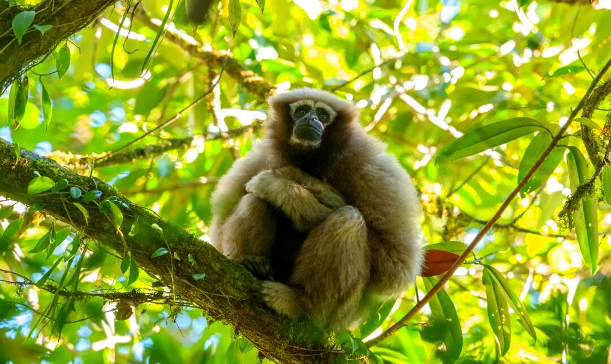

📇
基础名片
Basic Info
🐒 高黎贡白眉长臂猿
学名：Hoolock tianxing ,别名：天行长臂猿、白眉长臂猿
发现时间：2017年（中国科学家命名的唯一类人猿）
保护级别：国家一级保护动物、濒危（EN）
学名：Hoolock tianxing ,别名：天行长臂猿、白眉长臂猿
发现时间：2017年（中国科学家命名的唯一类人猿）
保护级别：国家一级保护动物、濒危（EN）
✨
外形特征
Morphology
外形特征
雌雄异色
雄性：通体黑色，白色眉毛（两条分开），无冠毛
雌性：黄褐色，白眉更明显，下巴有白须, 无尾、长臂，前肢远长于后肢，擅长摆荡
雌雄异色
雄性：通体黑色，白色眉毛（两条分开），无冠毛
雌性：黄褐色，白眉更明显，下巴有白须, 无尾、长臂，前肢远长于后肢，擅长摆荡
🌍
分布与栖息
Habitat
分布与栖息
中国仅存：云南保山、腾冲、盈江
栖息环境：海拔500–2700米的常绿阔叶林、山地雨林 栖息地碎片化严重，呈孤岛状分布
中国仅存：云南保山、腾冲、盈江
栖息环境：海拔500–2700米的常绿阔叶林、山地雨林 栖息地碎片化严重，呈孤岛状分布
🍃
习性与繁殖
habits
习性与繁殖
树栖、臂行，极少下地 ;一夫一妻家庭群（3–5只） ;清晨鸣叫（二重唱），宣示领地
食性：野果、嫩叶、花芽、昆虫
繁殖：每3年1胎，孕期约7个月
树栖、臂行，极少下地 ;一夫一妻家庭群（3–5只） ;清晨鸣叫（二重唱），宣示领地
食性：野果、嫩叶、花芽、昆虫
繁殖：每3年1胎，孕期约7个月
🛡️
保护现状与措施
measure
保护现状与措施
种群数量：中国仅150–200只（比大熊猫更稀少）
保护措施：高黎贡山/铜壁关保护区、巡护监测、栖息地修复
威胁：栖息地破坏、盗猎、近亲繁殖
种群数量：中国仅150–200只（比大熊猫更稀少）
保护措施：高黎贡山/铜壁关保护区、巡护监测、栖息地修复
威胁：栖息地破坏、盗猎、近亲繁殖

高黎贡白眉长臂猿种群数量变化监测
高黎贡白眉长臂猿种群数量增长趋势